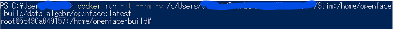
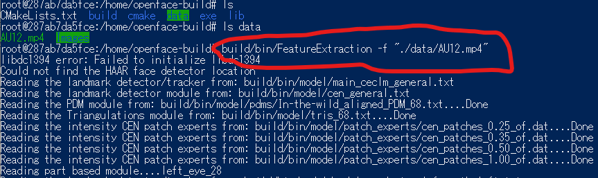
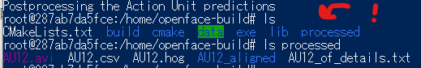
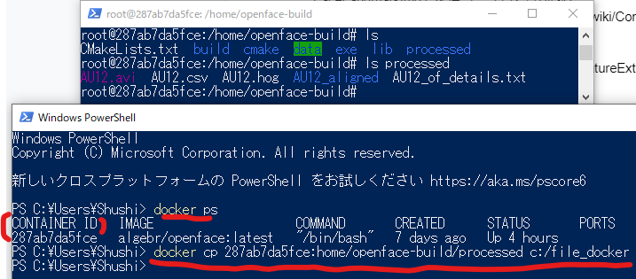
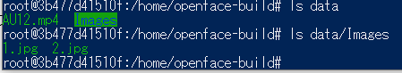

表情の分析をお手軽にやっちゃおう！
Openfaceの使い方を解説する。とっても便利なツールなので、表情の研究したくなったときには是非。
OpenFaceとは
Tadas Baltrušaitis氏らによって開発された表情分析用のツール。機能は以下のとおりである。
・表情トラッキング (facial landmark detection)
・頭の位置推定 (head pose estimation)
・Action Unit推定 (facial action unit recognition)
・視線推定 (eye-gaze estimation)
などができる。便利～。各OSでの使い方はWikiに書いてあるので、ご確認くだせぇ。ちなみにWindowsだとボタンぽちぽちで解決できるのでよい。
仮想環境を用いた使い方 (2021/6/25更新)
ここではWindows、Ubuntu、Macだろうが関係なし。OSに依存しないDockerを使ったOpenFaceの使用方法を紹介する。
Dockerというのはアプリケーションの依存関係を解消するための技術で、「環境をコンパクトに提供する」ところに利点がある。各OSでのインストール方法は公式ドキュメントを確認すること。
Docker for Mac
Docker for Windows
以下のコードは「OpenFaceを利用可能な仮想環境を起動する」コマンドだ。「-v [ローカルPATH]:[コンテナ内パス]」の[ローカルPATH]には表情画像・映像の入ったフォルダのパスを設定しておく。[コンテナ内パス]のフォルダ内には設定した表情画像・映像のフォルダがコンテナ内で作成される。コマンドラインでは以下のように入力する：
docker run -it --rm -v [ここにローカルPATHを入力する]:/home/openface-build/data algebr/openface:latest
Powershellなどのコマンドラインで以下のように入力してEnterをおす。

しばらく経つとOpenFaceが使えるコンテナ(上の画像で言うと、root@わけわからん英数字)が立ち上がる。これで、「OpenFaceを利用可能な仮想環境が準備できた状態」なのだ。
動画を解析する
まずはlsでフォルダの中身を確認しよう。
lslsはLinuxの基本的コマンドで、ファイルやディレクトリの情報を一覧で表示する。
/dataフォルダは上記コマンドの[コンテナPATH]と対応している。中身は[ローカルPATH]内のファイルが入っている。
ls data でdataフォルダ内の中身を確認しよう。
早速、dataフォルダ内のmp4を対象として表情分析を行おう。
コンテナ上で解析を行うときには build/bin/FeatureExtractionで解析を開始する。
対象がファイルの場合には引数に「-f “[動画 or 静止画ファイル]”」 を設定する。
build/bin/FeatureExtraction -f "data/AU12.mp4"ここまでのコマンドは以下の画像の通りである。

「Closed successfully」という出力を確認したら改めてlsコマンドでディレクトリ内を一覧表示してみよう。
すると以下の通り、processedができている。この中に解析出力のファイルがあることを確認できる。

ファイルの保存には仮想環境内のファイルをローカル（今君が使っているPCだゾ☆）にコピーする必要がある。
別のコマンドラインを新たに立ち上げて「docker ps」で確認する。
以下のように入力してコピーしたファイルをローカルに持ってくる（別のShellを開く）
最後の部分には保存用のPATHを記述する。
docker ps
docker cp [contaier ID]:home/openface-build/processed [保存したいPATH]
画像的には以下のような感じです。

これで解析済みの表情運動・視線・頭部位置等のFrameごとのデータが保存PATHに書いたところから出てくる。ヤッタネ！！
FeatureExtractionで特に指定をしなければ視線・Landmark・AUなどの出力が出てくる。
複数の静止画像を解析する
今回はフォルダ内に複数のフォルダが入っている場合には以下の通りだ。
まずは中身の確認をlsコマンドで確認。

このフォルダを解析すべく、コンテナ内では以下のコマンドを回す。
build/bin/FeatureExtraction -fdir "data/Images"基本的には、「-fdir [コンテナ内の複数画像があるフォルダ]」以外はほぼ同じ。
この解析をするとフォルダ内の画像すべてが同一人物によるシーケンスと仮定して、一つにまとめる。フォルダ内の画像が全て異なる人物である場合には、「FeatureExtraction」の代わりに「FaceLandmarkImg」を使う。
解析後は動画解析で説明した通りのことをすればよし。
For文使った自動解析
最後にフォルダ内に複数のフォルダが階層的に入っているような状況を想定する。UbuntuでのFor文の書き方を活用して、ぶん回しまくる。
for i in ./data/Images/Images/*/*; do build/bin/FeatureExtraction -fdir $i; done
さらに「AUのみの出力を見たいとき」、「Landmark検出に異なる学習済みモデルを適用したいとき」などは本家のWikiを確認してください。
ではでは！